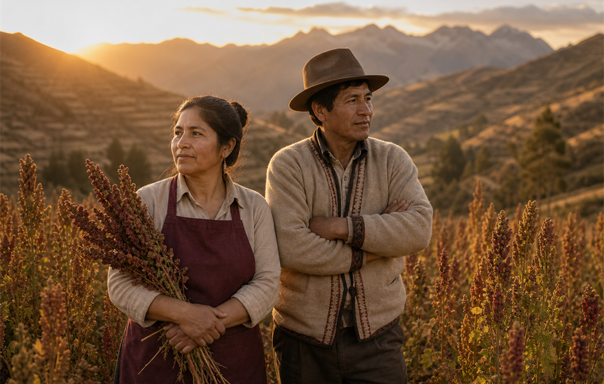
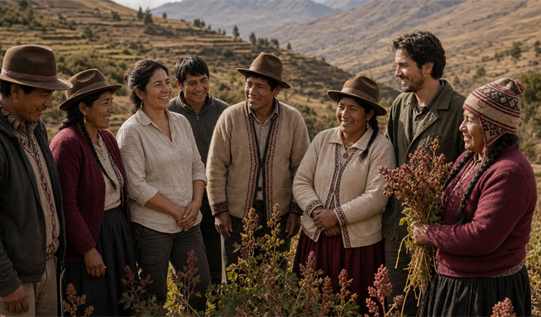
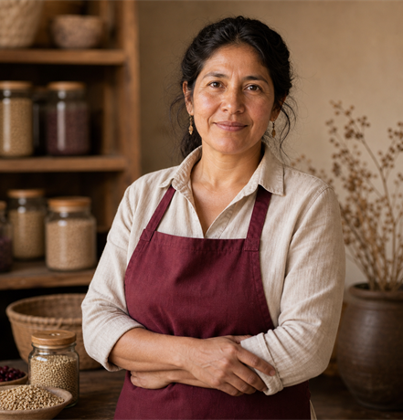
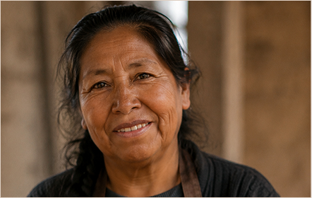
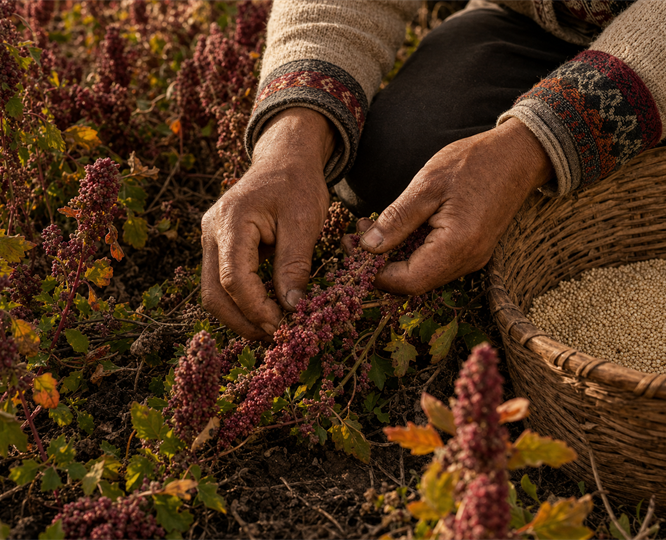
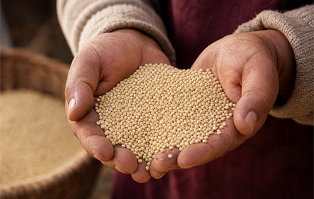
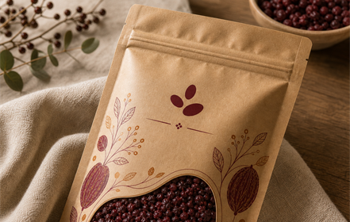
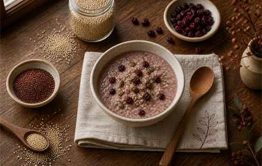
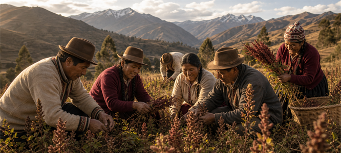

Nuestra historia
Sumaq Rurucha nace para conectar familias productoras con personas que valoran alimentos naturales, frescos y con historia.
Queremos que cada producto comunique su origen, su cuidado y el trabajo que existe detrás.
Somos una marca que nace cerca del campo, del producto y de las personas que hacen posible cada cosecha.
Ver catálogo →
Sumaq Rurucha nace para conectar familias productoras con personas que valoran alimentos naturales, frescos y con historia.
Queremos que cada producto comunique su origen, su cuidado y el trabajo que existe detrás.

Personas que sostienen el origen, la selección y el cuidado de cada producto.

Fundador
Visión de marca, relación con productores y selección de productos.
Origen, cultivo y saberes que sostienen la calidad del producto.

La identidad de Sumaq se entiende mejor cuando se ve: manos, semillas, empaque y comunidad.
Conocemos el origen de cada producto y su proceso.
Revisamos pureza, frescura y presentación.
Cuidamos que el producto llegue claro, seguro y confiable.



Trabajamos para fortalecer una cadena más justa, transparente y cercana al origen.

Explora productos naturales seleccionados con cuidado.